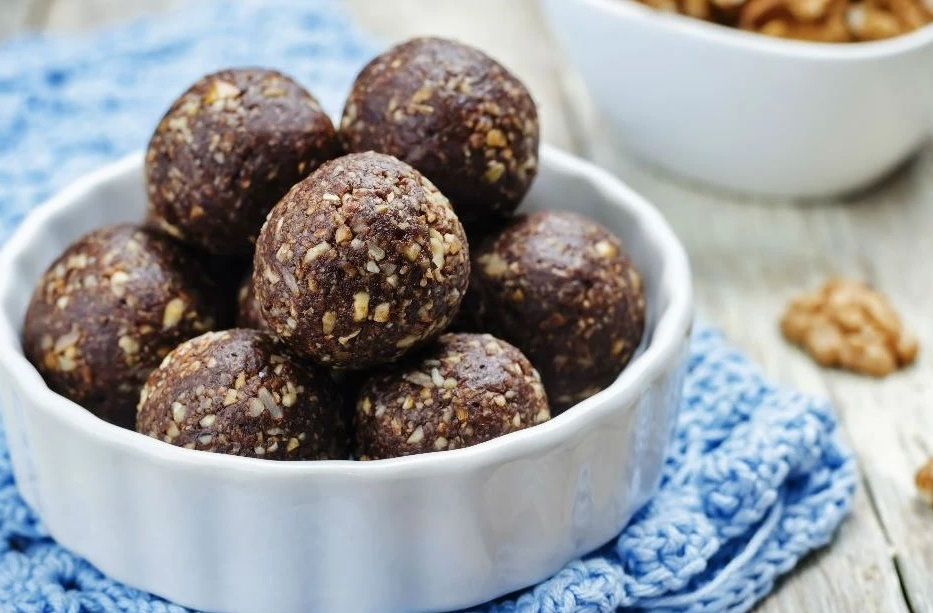

Bu lezzetli tarif şekersiz beslenenler için harika bir atıştırmalık alternatifi. Tatlı krizi tutanlara... Bu minik sağlıklı toplar tam sizlere göre! Tarif: Melis Hoşman
Kaynak

Kişi Sayısı: 3 kişilik
Hazırlama Süresi: 15 dakika
Pişirme Süresi: 0 dakika
Tarif İçin Malzemeler:
7 adet hurma
3 adet günkurusu kayısı
1 adet küçük boy muz
2 çay bardağı yulaf kepeği
4 yemek kaşığı dövülmüş fındık
1 tatlı kaşığı kakao
20 gram şekersiz çikolata
2 yemek kaşığı süt
2 çay kaşığı tarçın
Tarif Önerileri:
Tatlandırmak için içerisine farklı kuru meyveler, bal, pekmez ya da agave şurubu ilave edebilirsiniz.
Tarifin Yapılışı:
Hurmalarınız çok kuruysa işe hurmaları yumuşatarak başlayın.
Bir kasenin içine hurma ve sıcak suyu koyun. Yaklaşık 6-7 dakika bekletikten sonra suyun içinden çıkarın.
Yumuşayan hurmaların çekirdeklerini çıkarın.
Günkurusu kayısıları minik minik doğrayın.
Çikolatayı eritin.
Hurma, muz, süt ve kayısıları rondodan geçirin.
Ardından içerisine yulaf kepeği, tarçın ve kakao ilave ederek birkaç kez daha rondoyu çalıştırın.
Son olarak içerisine fındıkları ekleyerek bir kaşık yardımıyla birbirine yedirin.
Elinizi hafifçe ıslatın ve hazırladığınız harçtan minik parçalar alarak yuvarlayın.
Tüm harca bu işlemi uygulayın ve bittikten sonra bir tabağa alın ve buzdolabında soğumaya bırakın. Birkaç saat sonra çıkarıp afiyetle yiyin.